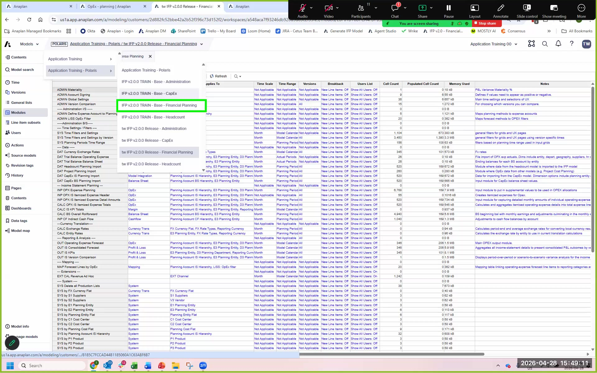

Model Generation
What happens during generation, how long it takes, and what to expect
What Generation Does
When you trigger generation, the App Framework reads all 44 of your configuration answers and provisions the complete IFP model structure. This is not a template copy — it is a dynamic generation process that applies your configuration decisions to produce a model specific to your answers.
Generation provisions four models:
- Financial Planning — the main planning model (INP, CALC, OUT modules)
- Headcount — the HC model with department-level planning (only if enabled)
- Admin — administration and configuration module (ADMIN modules)
- CapEx — capex planning model (only if enabled)
What Gets Created
| Object Type | Count (Typical) | What It Contains |
|---|---|---|
| Models | 4 | Financial Planning, Headcount, Admin, Data Orchestrator |
| UX Apps | 1+ | The IFP planning application end users will access |
| Assets | ~17 | Import definitions, saved views, dashboard configurations |
| Configurations | 43 | The answer record for all configuration questions (read-only post-generation) |
Generation Status States
| Status | What It Means | What to Do |
|---|---|---|
| Generating... | Generation is in progress. Models are being provisioned. | Wait. Do not trigger another generation. Expected: 10–20 min. |
| Generated with Errors | Generation completed. Some formulas have errors due to configuration differences from base model. | Normal and expected. Review error logs — most errors are resolvable. |
| Generated Successfully | Generation completed with no formula errors detected. | Proceed to post-generation steps. |
| Generation Failed | Generation did not complete due to a platform error. | Contact Anaplan support. Do not attempt another generation without diagnosis. |
'Generated with Errors' is normal and expected, especially in training and early implementations. It means some formulas reference items that differ from the base model template — usually caused by hierarchy renaming, geography removal, or configuration choices that differ from the template assumptions. The model is functional. You will work through the error list systematically in the Error Log Review section.
Model Version Selector

IFP Model Pages After Generation

Generation With Errors — Activity Panel

Default Financial Planning Modules after Generation

UX Navigation Structure & Pages
Once generation completes, the generated UX app contains organized pages and categories that users navigate to do their planning work. The v2.1.0 default template includes:

Generation Steps
Trigger Generation
From the Application Framework Configurator, after completing all sections, click Generate. Confirm any prompts. Note the start time.
Monitor Status
The App Framework overview page shows generation status. Refresh periodically. Do not close the browser or trigger another generation while in progress.
First Look at Generated Model
Once complete, navigate to your workspace. You should see the four IFP models listed. Open the Financial Planning model. Verify modules are listed under ADMIN, SYS, DAT, INP, CALC, OUT prefixes.
Check Error Logs
Return to the App Framework. In the bottom-right of the overview page, find the error log count. Click to expand the log. Note: more than 0 errors is normal. Proceed to Error Log Review.